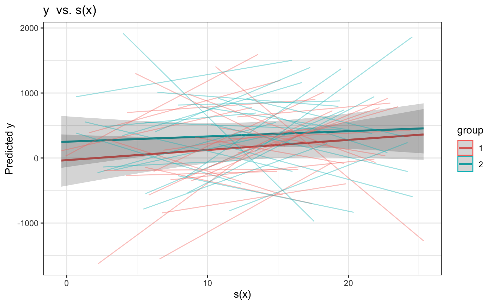
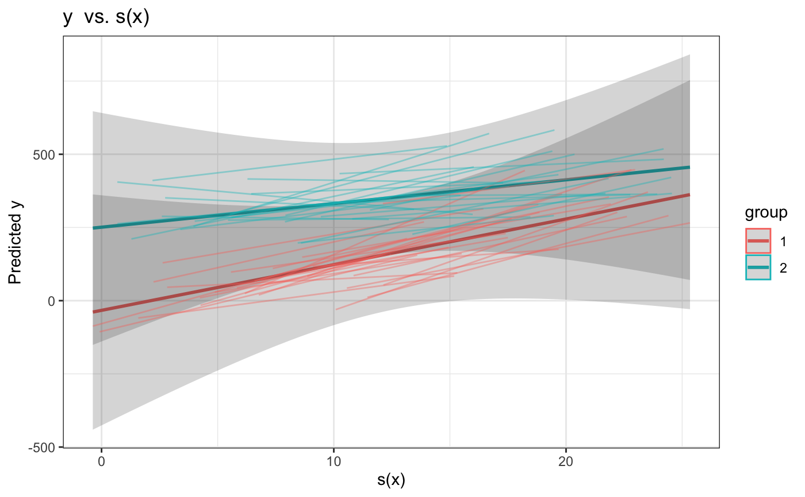

GAMM plotting using ggplot2
plotGAMM( gammFit, smooth.cov, groupCovs = NULL, orderedAsFactor = TRUE, rawOrFitted = FALSE, plotCI = TRUE, grouping = NULL )
| gammFit | fitted gam model as produced by gamm4::gamm() |
|---|---|
| smooth.cov | (character) name of smooth term to be plotted |
| groupCovs | (character) name of group variable to plot by, if NULL (default) then there are no groups in plot |
| orderedAsFactor | Disabled |
| rawOrFitted | If FALSE (default) then only smooth terms are plotted; if rawOrFitted = "raw" then raw values are plotted against smooth; if rawOrFitted = "fitted" then fitted values are plotted against smooth |
| plotCI | if TRUE (default) upper and lower confidence intervals are added at 2 standard errors above and below the mean |
| grouping | (character) Name of variable that you want to use as the group argument in ggplot2::aes(), useful for better visualization of longitudinal data, (default is NULL) |
Returns a ggplot object that can be visualized using the print() function
Other Plotting:
plotGAM()
set.seed(1) data <- data.frame(x = (seq(.25,25, .25) +rnorm(100)), group = rep(1:2, 5), z=rnorm(100), index.rnorm = rep(rnorm(50, sd = 50), 2), index.var = rep(1:50, 2)) data$y <- (data$x)*data$group*10 + rnorm(100, sd = 700) + data$index.rnorm + data$z data$group <- ordered(data$group) gamm <- gamm4::gamm4(y ~ + s(x) + s(x, by=group) + z + group, data=data, random = ~ (1|index.var)) plot <- plotGAMM(gammFit = gamm, smooth.cov = "x", groupCovs = "group", plotCI = TRUE, rawOrFitted = "raw", grouping = "index.var")#> [1] "orderedAsFactor functionality temporally disabled"plotplot2 <- plotGAMM(gammFit = gamm, smooth.cov <- "x", groupCovs = "group", plotCI = TRUE, rawOrFitted = "fitted", grouping = "index.var")#> [1] "orderedAsFactor functionality temporally disabled"plot2